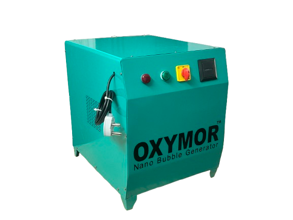

Innovative nano bubble generation systems designed for water treatment, wastewater treatment, aquaculture, agriculture and industrial water applications.

Nano bubble generators are specialized systems designed to introduce extremely small gas bubbles into water. These systems can be configured for different gas types and operating conditions according to application requirements.
Nano bubble technology is being explored across water treatment, aquaculture, agriculture, wastewater treatment and industrial processes. Its performance depends on factors such as gas selection, water characteristics, equipment design and operating conditions.
Sandor Tescon Aqua provides water treatment solutions that can incorporate nano bubble generation technology based on project requirements and application objectives.
Nano bubble systems introduce fine gas bubbles into water using suitable generation and mixing technologies. The system configuration depends on the required application, gas type and water conditions.
A nano bubble generation system can combine different components to support gas supply, water circulation, bubble generation and process monitoring.
Supplies the selected gas to the generation system according to application and operating requirements.
Supports water circulation and provides the required flow through the nano bubble generation equipment.
Generates fine gas bubbles using suitable mixing, pressure or cavitation-based technologies.
Flow measurement and monitoring equipment can support observation of system operating conditions.
Control equipment can be integrated to manage pump operation, system settings and operating parameters.
Suitable piping and distribution arrangements connect the generator to the required water treatment process.
Nano bubble generation technology can be considered for a range of water-related applications depending on process objectives and operating conditions.
Nano bubble systems can be integrated into selected water treatment processes as part of an application-specific treatment arrangement.
Suitable gas injection systems can be evaluated for wastewater treatment and process improvement applications.
Oxygen-based nano bubble systems may be considered for selected aquaculture applications and water oxygenation requirements.
Nano bubble technology can be evaluated for irrigation water applications and agricultural water management processes.
Application-specific systems can be considered for industrial water circulation and selected process treatment requirements.
Suitable oxygenation and circulation configurations can be evaluated for ponds and other water bodies.
Nano bubble generator systems can be configured to suit different process requirements. The actual performance and benefits depend on the equipment design, gas type, water quality and application conditions.
Designed to introduce fine gas bubbles into water through suitable generation technology.
System arrangements can be selected according to the required application.
Suitable instruments can monitor important operating conditions.
Can be integrated with selected water treatment and circulation systems.
Oxygen-based systems for applications where water oxygenation is an important process requirement.
Gas supply and injection arrangements selected according to the required operating conditions.
Generator configurations designed around selected industrial water process requirements.
Nano bubble configurations for selected fish farming and aquaculture water applications.
Configurations that can be evaluated for irrigation and agricultural water management applications.
Control and monitoring arrangements selected according to project operating requirements.
We consider the water characteristics, required gas, process objectives and operating conditions when developing a suitable nano bubble system.
Understand the water source, application and process objectives.
Review flow rate, gas selection, operating conditions and site needs.
Identify suitable generation, circulation and control components.
Develop a system configuration based on the project requirements.
Share your application details, water characteristics, required flow rate and project objectives with us. Our team can help identify a suitable nano bubble generation configuration.
Discuss Your Requirement